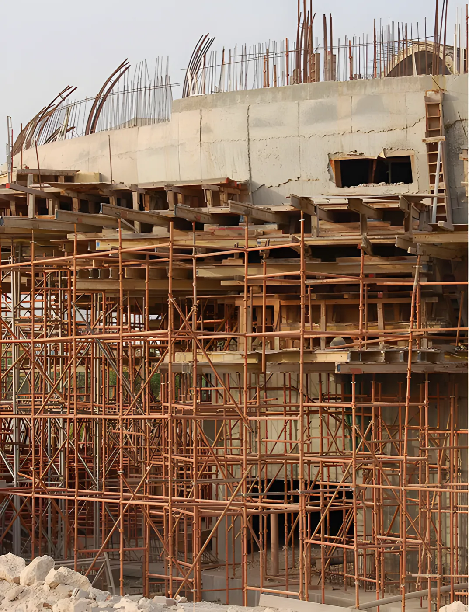

Turnkey construction
Construction is CDC's core work. We take a project from consulting, planning and permits through design and engineering, procurement, construction and commissioning, to facility management, on the contract programme and budget.

Services
01EngineeringCivil, construction, manufacturing, oil & gas, infrastructure, telecoms
Our engineers cover energy, construction, electromechanics, manufacturing, procurement and project management. CDC also takes ownership positions in projects and companies, so we look at a job the way an owner does as well as an engineer.
- Civil engineering
- Construction
- Manufacturing
- Oil & gas
- Infrastructure
- Telecommunications

02ProcurementThe right material, on site, at the right time
Procurement, planning and engineering work as one, so materials arrive without waste and on time. Every supplier is approved and then rated through a preliminary assessment questionnaire and our computerised supplier evaluation system.
- Worldwide sourcing
- Economical, correct materials
- Delivery on time
- Delivered to the exact place on site
- Supplier assessment questionnaire
- Computerised supplier ratings

03Construction & developmentTowers, hotels, villas, compounds and airport buildings
Bring us in early and we can find savings before they cost you: we look ahead for the problems on a project and solve them in the drawings, not on site. Our own plant and crews mobilise to every job, and training runs in-house and outside for every level.
- Land development
- High-rise towers, commercial and residential
- Townhouses
- Luxury villas
- Airport buildings
- Hotel refurbishment

04Quality assuranceISO 9001, ISO 14001, OHSAS 18001 in one system
Every quality requirement is listed before work starts. Qualified QA/QC staff inspect and test everything, our subcontractors' work included, against the Project Quality Plan, method statements and work instructions. Our measuring equipment is calibrated, and internal audits check the system itself.
- Integrated Management System
- ISO 9001:2008 Quality
- ISO 14001:2004 Environment
- OHSAS 18001:2007 Health & Safety
- Project Quality Plan per job
- Internal quality audits

05Plant & machineryOur own heavy equipment, transport fleet and workshop
The Plant & Machinery workshop maintains and repairs every machine and vehicle on a preventive schedule, adds new equipment as the work demands, and trains and certifies our tower crane operators, riggers and heavy equipment operators. A third-party agency inspects the equipment regularly.
- Tower, derrick and mobile cranes
- Placing booms and concrete pumps
- Passenger hoists and work platforms
- Excavators, graders, loaders
- Generators and tower lights
- Dump trucks, trailers, tankers
- Buses, 15 to 65 seats
- Pick-ups and 4WD vehicles

06OperationFacility management and insurance after handover
Our work does not stop at the keys. Facility management and insurance complete the chain, and CDC owns and operates projects linked to its own work. Tower 31 and West Palm Beach on our register were built for CDC's own account.
- Facility management
- Insurance
- Projects we own and operate
- Maintenance after completion

What we build
One example of each from our own register.
- High-rise towers#296 Kempinski Residences & Suites, 252.10 mRegister →
- Hotels#295 The St. Regis Doha, 336 keysRegister →
- Villas and compounds#270 Al Dana Garden II, 142 villasRegister →
- Airport buildings#211 NDIA control tower and fire stationsRegister →
- Land development#221 West Bay Complex: dredging and breakwaterRegister →
- Industrial#209 Ras Gas administration complex, Ras LaffanRegister →
Have a project in Qatar?
Send the drawings or the tender documents to our Construction Division. If your enquiry is about energy work, say so in the subject and it goes to the Energy Division.